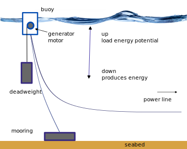

BEST
Buoyancy Energy Storage Technology
A feasible solution for energy storage with buoys
Gravitational energy storage is an innovative method of storing energy, taking advantage of the force of gravity. This approach differs from traditional electrochemical batteries and represents a potentially revolutionary solution for managing the intermittency of renewable energy sources, such as solar and wind, which do not produce energy constantly.

Principle of operation
The system works in two phases: in the charging phase, the energy excess electricity from renewable sources is used for lift the deadweight, to the surface of the sea. In the discharge phase, the blocks are lowered to the seabed, exploiting gravity to produce kinetic energy, which then comes converted into electricity.
In our case the heavy object is a deadweight with the dimensions of about 4 railway carriages full of stones hanging from a buoy same dimensions that keeps it suspended.
Inside the buoy an electric motor lifts the deadweight moments of surplus energy or releases the deadweighty becoming a electric generator, in times of energy demand.
Everything is completed by a cable that holds the buoy to the seabed, ed a marine power line connects the buoy with the motor-generator to the grid of distribution.
Advantages
The benefits of gravitational energy storage, or more specifically the BEST, compared to other energy sources include:
- High efficiency: It has been estimated by independent studies an overall efficiency higher than 80%.
- Low cost of the system compared to alternatives
- Zero emissions during use: Once built, BEST not emits greenhouse gases or other air pollutants during the energy generation process.
- Quick Response Capability: The activation time in the order of 250/1000 milliseconds.
- Accumulate energy without loss over time: One accumulators once positioned. They retain their energy without loss.
- Intrahourly, daily or annual, multi-annual: they can be either compensate energy demands with short and long cycles same cost and technology. In this regard it can replace at a cost lower gas and oil storage, providing an advantage competitive, industrial, financial and military.
- Possibility of using recycled materials: Fill the blocks with recycled aggregates, contributing to sustainability environmental.
- Long lifespan:: Gravitational storage facilities have a long useful life and do not undergo significant degradation of accumulation capacity over time, which is measured in decades.
- Environmental integration: In places where there are accumulators, buoys physically inhibit fishing, realizing de facto marine protected areas, which allow reproduction of fish species.
- Integration with fish farms: Close to the locations where accumulators are present, they can be made easily from fish farms.
- Independence from climatic conditions: Unlike renewable sources such as solar and wind, which are dependent by weather conditions, gravitational storage is not influenced by the climate and can provide energy on demand.
- Integration with renewables: This technology can be integrated with renewable energy sources to stabilize the electricity grid and manage the intermittency of production energy.
- Low environmental impact: Unlike some sources renewables that can have a significant impact on the environment, such as the construction of large dams for energy hydroelectric, gravitational storage has an environmental impact Bass.
- Low or no environmental risk: Unlike solutions alternatives such as offshore gas storage, or oil, which I can explode or lose. And even if they break they don’t cause floods like dams.
- Reduction of dependence on fossil fuels: Using excess energy from renewable sources to lift weights, it Gravitational storage helps reduce dependence on fossil fuels and improve energy security.
- Military: storage, and the infrastructure that carries energy from the accumulators to the mains, it allows you to easily create automated refueling points for both naval units conventional, and for marine drones are of the underwater type (AUV – Autonomous Underwater Vehicle) or surface (USV – Unmanned Surface Vehicle)
- Easy integration with hydrogen: Can be used in combination of electrolysers to generate hydrogen as needed and oxygen. Minimizing costs and risks and losses for the storage of hydrogen and oxygen.
- They can be moved loaded, in complete safety, as long as are positioned on a sufficiently deep seabed.
- They don’t make any noise.
- Even in shallow seas like the North Sea, I can turn out useful for compensating for daily peaks. In fact, the dead bodies they move a few centimeters per minute and can be used for hours before reaching the seabed even in the case of shallow waters as in the Northern European Sea.
- They have a low, or no visual impact, in fact the buoys at need they can also be positioned slightly under the fur of water, to minimize the visual impact.
- They can be support to a port to energize it when the ships are in port. Thus allowing it to support large ships even with a distribution network insufficient to support the peaks in demand created by large ships. All without generate pollution linked to large ships.
Disadvantages
- In places where accumulators are physically present inhibit trawling, and navigation must be regulated to take into account where they are positioned the buoys.
- They have limited mobility due to their mass.
- If moved to shallow water, they lose their potential.
- Even if the buoys themselves do not pollute the cable duct that connects them to the net affects the life of aquatic organisms in a significant way similar to other submarine cable pipelines
Technologies involved
Generators, gearmotors, shipbuilding, iron buoys, steel buoys ferrocement, power lines, are all technologies that have surpassed more 150 years old and have reached maturity many years ago. This allows us to have a precise estimate of costs, and a precise prediction of the operational life of the “BEST”.
There are established and competitive global manufacturers for these components allowing industrial integration to be achieved fast.
Comparison with other storage technologies
hydroelectric dams
Energy storage via hydroelectric dams is one form more traditional and efficient energy storage. Works exploiting the potential energy of the water that is raised to a higher level than its natural position, then it comes released to move the turbines and generate energy when necessary.
Here are some benefits and challenges associated with energy storage via hydroelectric dams:
Advantages:
- Rapid Response Capability: Hydroelectric dams can respond quickly to the demand for electricity, increasing or reducing production based on system needs electric.
- Immense storage capacities: Large hydroelectric dams they can store huge amounts of energy, providing a reliable reserve for periods of peak demand or lack thereof of other intermittent renewable energy sources.
- Zero emissions during use: Once built, the dams hydroelectric plants do not emit greenhouse gases or other pollutants atmospheric during the energy generation process.
- Long Lifespan: Hydroelectric dams can have a lifetime very long useful life, up to several decades, with operating costs relatively low compared to other energy sources.
Disadvantages:
- Environmental impact: The construction of large dams can have a significant impact on the local ecosystem, including loss of habitat, the migration of fish species and the modification of water regime in rivers.
- Approval and Planning Challenges: Planning and Approving new dams can be complex and demanding a long time due to environmental concerns, issues of land rights and social implications.
- High construction costs: The construction of new dams can be expensive and require a financial investment significant, requiring a recovery period of the investment before the financial benefits can be made.
- Security Risks: There are security risks associated with large hydroelectric dams, including the risk of failure structural, flash floods or other catastrophic events that they could endanger human lives and cause damage significant.
Energy Storage Systems ESS
Energy storage via electrochemical batteries, especially large-scale facilities known as energy storage systems (ESS), is becoming increasingly popular as a coping solution the variability of renewable sources and guarantee a supply stable and reliable energy. These systems use alkaline batteries lithium-ion, lead-acid batteries, nickel-cadmium batteries and others technologies for storing electrical energy into chemical electricity, which can be released when necessary.
Advantages:
- Flexibility: Energy storage systems based on Batteries are highly flexible and can be installed in various sizes and configurations, allowing for quick response and adaptable to energy demand.
- Quick response: Batteries can be activated instantly to provide energy when there is a peak demand or shortage supply from other sources, helping to maintain stability of the electricity grid.
- Efficiency: Modern lithium-ion batteries and other technologies Batteries can have high energy efficiency, with a high repeated charge and discharge capacity without significant loss of power.
- Modularity: Battery-based energy storage systems they are modular, meaning they can be expanded or contracted easily according to user or system needs electric.
Disadvantages:
- High initial costs: Even if battery costs per lithium-ion batteries have decreased significantly in recent years, the installation of large-scale energy storage systems may require a considerable initial investment.
- Limited life: Although modern lithium-ion batteries have a longer service life than their longer counterparts old, they continue to degrade over time, which can reduce their energy storage capacity over time years.
- Environmental problems: The production and disposal of batteries can cause significant environmental impacts, including consumption of natural resources, chemical pollution and waste management.
- Fire Risk: There is an associated fire risk to lithium-ion batteries, especially if they are not managed correctly or if they are subjected to operating conditions extreme.
Hydrogen
Energy storage with hydrogen is a promising technology that it is considered as a solution to address the related problems to the intermittent availability of renewable energy sources, like the sun and the wind. The process involves the electrolysis of water to separate hydrogen from oxygen using electrical energy, generally from renewable sources, to produce hydrogen. Subsequently, the hydrogen is stored to then be used in the future to generate energy through cells a fuel or by direct combustion.
There are several benefits and challenges associated with energy storage with hydrogen:
Advantages:
- Versatility: Hydrogen can be used in a variety of sectors, including transportation, industrial manufacturing and residential heating, offering a versatile solution for energy management.
- Zero emissions during use: When hydrogen is burned or used in fuel cells, its only byproduct is water, making it a zero-emission energy source during use. Long-term storage: Hydrogen can be stored for long periods, offering a solution for the balancing energy between periods of high production